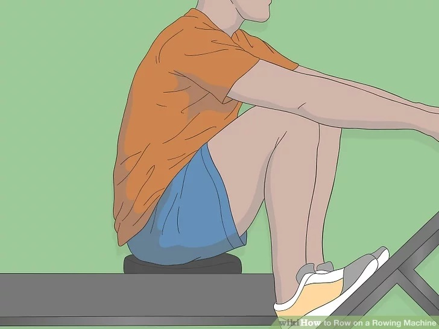
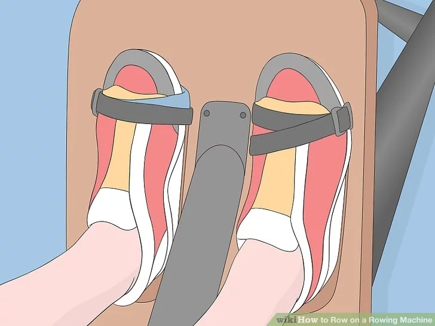

Part 1 of 3: Get into the Starting Position
- Sit down on the seat and bend your knees. Make sure your bottom feels comfortable on the seat and adjust yourself if necessary. Bend your knees so you can get closer to the base of the machine. Look for a flat surface near the bottom of the base where you feet will go, which is called the footplate. Then, find the handle that's attached to the cord on the machine.
- The handle will be in the center of the base or near the top of the base.
- Be careful as you sit down because the seat slides.
- Secure the footplate strap around the top of your shoelaces. The balls of your feet are the only area that will maintain constant contact with the footplate, since you’ll likely need to lift your heels when your knees are bent. Pull the straps across the top of your foot until your feet feel secure. Make sure your feet don’t slide around on the footplate.
- It's best to wear rubber-soled shoes like sneakers, running shoes, or cross trainers while you're using a rowing machine. This makes it less likely your feet will slip.
- Don’t tighten the strap so tightly that it hurts. If your feet feel uncomfortable, loosen the straps and try again.
- Hold the handle using an overhand grip. The cord on the rowing machine has a handgrip that you’ll pull to work your arms. Grab onto the handle and pull it toward you. Adjust your hands on the handle so that they're in an overhand grip, which means your palms are facing down.
- Using an underhand grip rotates your arms and increases your risk of injury, so it's best to avoid positioning your hands palms up.
- Engage your core and straighten your posture. Once you have the handle in your hand, check your posture to make sure your back and shoulders are straight. Tighten your core muscles so they’re working as you row.
- An engaged core also helps keep your posture straight. You don’t want to slump forward or lean too far back as you’re rowing.
- Extend your arms and bend your knees to get into “the catch.” In rowing, the starting position is called “the catch.” While it might sound complicated, it’s a really natural pose to begin rowing. Pull the handle to extend the cord toward you, but keep your arms extended out away from your body. Then, bend your knees so that your seat is as close to the base of the machine as possible.
- When you're in the catch position, make sure your torso is hinged forward at your hips, your arms are straight out in front of you, and your shins are no more than perpendicular to the floor. Don't slide your seat as close to your feet as possible, as this can cause you to lean back. If you start your stroke with your shoulders behind your hips, you'll use your back in your push-off, which weakens your stroke and increases your risk of injury.
- Remember to keep your core engaged.

